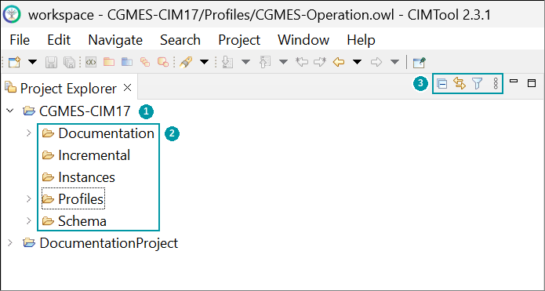
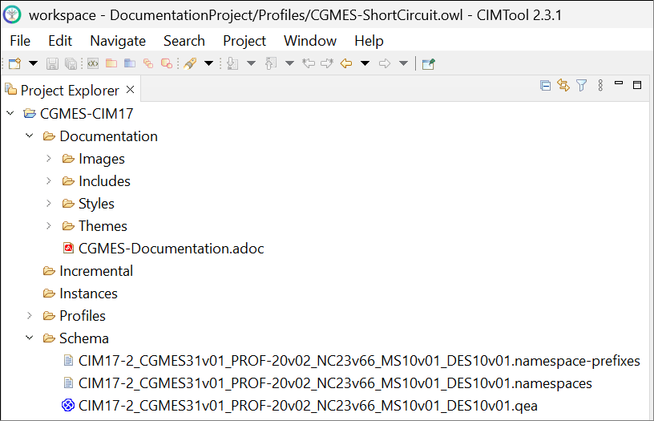
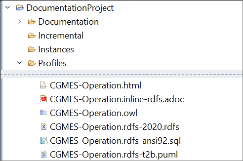
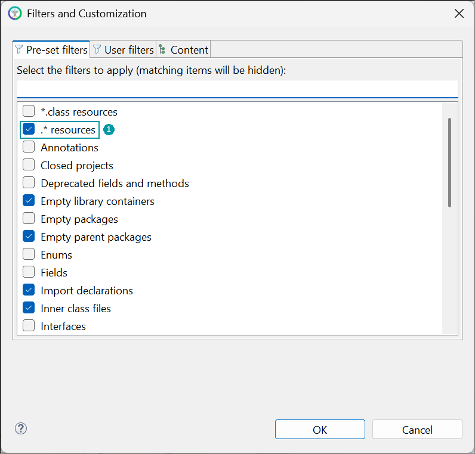
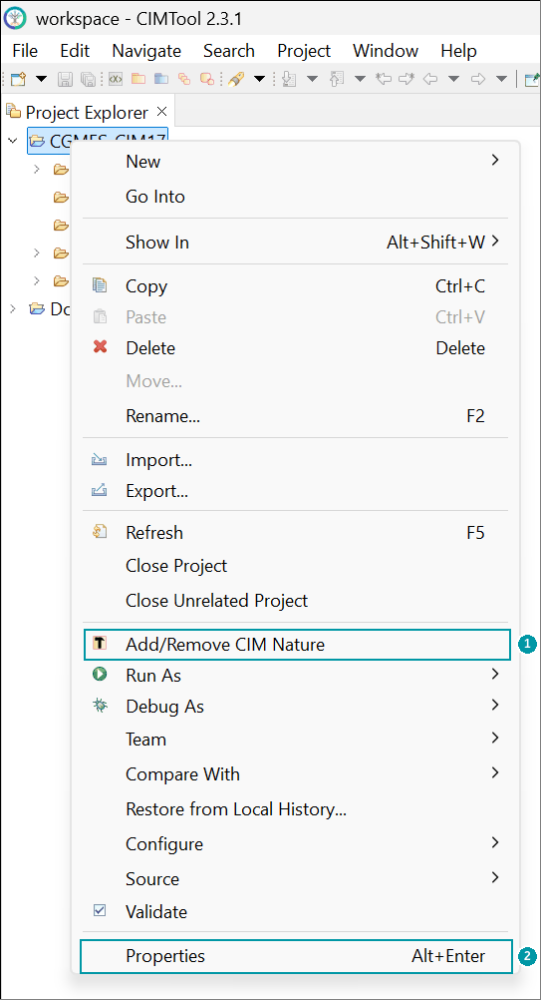

Project Explorer and Project Folders
The Project Explorer view lists your CIMTool projects and the files in them. It is where you create, import and open everything you work on: schemas, profiles, the artifacts the builders generate, validation data and documentation. Every CIMTool project has the same five folders, and CIMTool decides what a file is, and which editor and builders apply to it, by the folder it is in.

The Project Explorer with the project CGMES-CIM17 (1) expanded to its five folders (2). The view's toolbar (3) is at its top right.
The Project Explorer View
| Area | What it is for |
|---|---|
| 1 Project | Each CIMTool project in the workspace, shown with its name. Select a project, or any file in it, to show its schema in the Project Model and Documentation views. |
| 2 Project folders | The five folders every CIMTool project has. See The Five Project Folders. |
| 3 Toolbar | The view's own buttons, described below. |
The toolbar (3) has four buttons:
| Button | What it does |
|---|---|
| Collapse All | Collapses every project and folder in the tree. |
| Link with Editor | While it is pressed in, activating an editor selects that editor's file in the tree, opening its folder if needed. Use it to see which file you are editing when several profiles are open. Because selecting a file also switches the Project Model and Documentation views to its project, they follow you from one project's schema to another's as you move between editors. |
| Filters and Customization | Chooses which kinds of resource the tree hides, such as the project's hidden files. See Hidden Files. |
| View Menu | More options for the view, including Filters and Customization... and how the top level of the tree is shown (Top Level Elements: projects or working sets). |
The Five Project Folders
A new project, created with File > New > CIMTool Project, contains these folders. The Project Explorer lists them alphabetically.
| Folder | What it holds |
|---|---|
| Documentation | Your AsciiDoc documentation for the project: a master document and the images, text, stylesheets and themes it uses. See Documentation. |
| Incremental | Incremental CIM/XML files imported for validation. See Instances and Incremental. |
| Instances | CIM/XML files imported for validation, and the results of validating them. See Instances and Incremental. |
| Profiles | Your profiles (.owl) and every artifact generated from them. See Profiles. |
| Schema | The schema your profiles are built from: the CIM and any extensions. See Schema. |

The Documentation folder with its four subfolders and master document, and the Schema folder holding an Enterprise Architect project. This project also happens to have two optional files beside it,
.namespace-prefixes and .namespaces; a project needs them only for the uses described under Schema.
Keep files directly in these folders, not in subfolders of your own: CIMTool recognizes a schema, profile or instance file only when it is directly inside its folder. The Documentation folder is the exception, since it is organized however your documentation needs.
Schema
The Schema folder holds the schema that the project's profiles are built from. CIMTool reads every schema file in it and combines them into the project's merged schema, which is what the Project Model view, the Documentation view and the Profile Editor's schema pane show.
| File | What it is |
|---|---|
Enterprise Architect project (.eap, .eapx, .qea, .qeax) | A Sparx Enterprise Architect project file, read by CIMTool directly. .eap and .eapx are EA 15 (32-bit) files; .qea and .qeax are EA 16 and EA 17 (64-bit) files. |
XMI (.xmi) | A UML model exported from Enterprise Architect as XMI. |
OWL (.owl) | A schema in OWL. |
An Enterprise Architect project can also have optional related files beside it, with the same name and a different extension. None is required; add one only when you need what it provides. When you import the project, CIMTool imports any of these that sit beside it in the same folder, and reads them each time it reads the project:
| File | What it holds |
|---|---|
.namespaces | Which namespace URI each extension package or stereotype in the model belongs to. When it is present, it decides the namespaces of extension elements. See CIMTool Namespace Support. |
.namespace-prefixes | A prefix for each namespace URI, used to mark extension members in generated documentation. See Marking Extension Members with Namespace Prefixes. |
.stereotype-extensions | Stereotypes of your own that CIMTool should recognize in the model, in addition to its standard set. |
Schema files are added with File > Import > CIMTool > Import Schema. Double-click one to browse it in the Model Browser. To export the merged schema as one file, use File > Export > CIMTool > Export merged schema.
Profiles
The Profiles folder holds two kinds of file:
- Profiles (
.owl). The.owlfile is the profile definition. Double-click it to open it in the Profile Editor. - Generated artifacts. Each time you save a profile, the builders selected on its Profile Summary tab write their output here, named after the profile with the builder's own extension: XSD, JSON Schema, RDFS, AsciiDoc, PlantUML and so on. These files are outputs: edit the profile, not them, because the next build replaces them.

The profile
CGMES-Operation.owl and the artifacts its builders generated, each named after the profile. The other profiles in the folder are left out.
Profiles are created with File > New > CIMTool Profile or imported with File > Import > CIMTool > Import Profile. The folder can also hold validation rules files and .repair files created when a profile is repaired after a schema change; see Profile Maintenance. Builder logs (.log) appear here when a builder reports a problem.
Documentation
The Documentation folder, added in CIMTool 2.3.0, is where you assemble a document for the project: your own AsciiDoc text combined with the documentation the builders generate in the Profiles folder. It is created with four subfolders, Images, Includes, Styles and Themes, and the master document goes at its root. .adoc files open in the Asciidoctor editor. See Project and Profile Documentation for what each subfolder is for.
Instances and Incremental
These folders hold CIM/XML data imported for validation against a profile.
- Instances: a CIM/XML file imported with File > Import > CIMTool > Import Model (CIM/XML file) is stored here as a folder named after the model, linked to the profile it is validated against. Validation results (
.diagnostic) are written here too and open in the Diagnostic Browser. - Incremental: an incremental (difference) CIM/XML file imported with File > Import > CIMTool > Import Incremental CIM/XML file is stored here as a folder, linked to the base model in Instances that it changes.
See How To Validate CPSM for the full procedure.
Hidden Files
CIMTool keeps some files of its own in the project, with names that start with a dot. The Project Explorer hides them by default. They include the project's settings and builder preferences, a copy of your CIMTool preferences for the command-line tool (see cimtool-cli), the copyright templates that the builders put at the top of generated files, the hidden diagram file the Profile Real-Time Preview draws for each profile (for example Profiles/.EndDeviceConfig.puml), and the reports written when a schema is imported. Leave them in place: they travel with the project when you exchange it. To see them, click Filters and Customization on the Project Explorer's toolbar (or choose it from the View Menu). On the Pre-set filters tab, clear .* resources (1) and choose OK. Check it again to hide them.

The Filters and Customization dialog. Items whose filter is checked are hidden; .* resources (1) hides files whose names start with a dot.
What You Can Do from the Project Explorer
Most of these start from the right-click menu on a project or file:

The right-click menu on a project. Add/Remove CIM Nature (1) is CIMTool's own entry; Properties (2) opens the project's settings, including its CIMTool pages.
| To | Do this |
|---|---|
| Open a file | Double-click it. The editor depends on the file type; see Workbench Basics: Editors. To choose another editor, right-click and choose Open With. |
| Create a project, profile, rules file or mappings file | File > New, then the CIMTool wizard: CIMTool Project, CIMTool Profile, CIMTool Validation Rules, CIMTool Incremental Validation Rules, CIMTool HTML Rules, CIMTool XML Schema Rules or CIMTool Mappings. |
| Import into a project | File > Import > CIMTool, then the wizard for what you are importing: a schema, profile, spreadsheet, CIM/XML model or incremental, rules, copyright templates, an XSLT transform builder, or whole CIMTool projects. |
| Change a project's or profile's CIMTool settings | Right-click it, choose Properties (2), then CIMTool. For a project this includes the Profile Real-Time Preview's Diagram Style and the schema import options; for a profile, its own Diagram Style. |
| Repair a CIMTool project that no longer builds, or turn CIMTool's build off for a project | Right-click the project and choose Add/Remove CIM Nature (1). This switches the project's CIM Project nature, which is what makes CIMTool generate artifacts for it. Projects created with File > New > CIMTool Project already have it, so you rarely need this. Adding it to an ordinary Eclipse project does not create the five folders. |
| See which file you are editing | Press Link with Editor on the toolbar; see The Project Explorer View. |
| Rebuild every artifact in a project | Project > Clean...; see Workbench Basics: Builds. |
| Share a project | See Exchanging CIMTool Projects. |
Selecting a file in the Project Explorer also tells the Project Model and Documentation views which project to show.